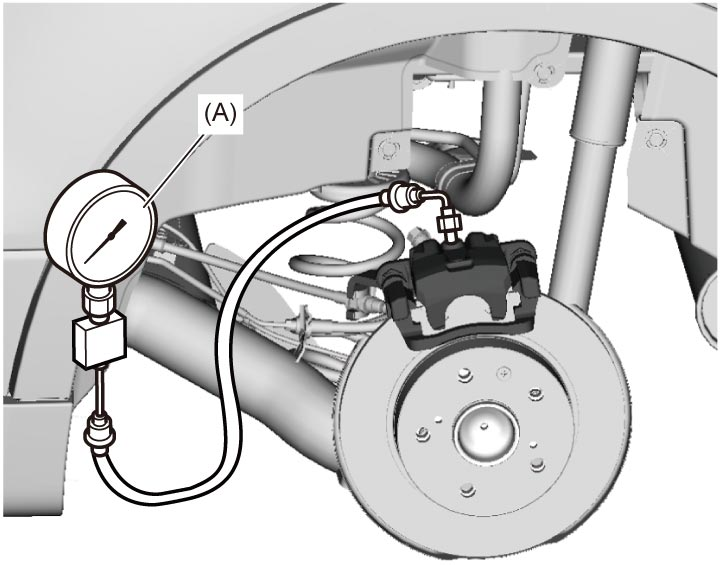

4F
| Brake Master Cylinder Pressure Sensor On-Vehicle Inspection |
1)Check basic brake system other than ESP®. 
2)Check that ignition is “OFF”.

 "Expand image")
4)Calibrate master cylinder pressure sensor.
5)Set ignition “ON” and select “DATA LIST” of SUZUKI scan tool. Refer to Operator’s Manual of SUZUKI scan tool for further details.
6)Check “Master Cyl Press” under “DATA LIST” of SUZUKI scan tool with brake pedal released.
If check result is not as specified, replace ESP® hydraulic unit / control module assembly.
If check result is not as specified, replace ESP® hydraulic unit / control module assembly.
Master cylinder pressure specification
Brake pedal released: 0 ± 0.9 MPa (0 ± 9.2 kgf/cm2, 0 ± 131 psi)
7)Hoist vehicle and remove left-side rear wheel.
8)Remove bleeder plug from left-side rear caliper and install special tool to left-side rear caliper.


 "Expand image")
9)With brake pedal depressed up to special tool gauge reading 10 MPa (102.0 kgf/cm2, 1450 psi), check “Master Cyl Press” under “DATA LIST” of SUZUKI scan tool.
If check result displayed on SUZUKI scan tool is not as specified, replace ESP® hydraulic unit / control module assembly.
If check result displayed on SUZUKI scan tool is not as specified, replace ESP® hydraulic unit / control module assembly.
Master cylinder pressure specification
Brake pedal depressed 10 MPa (102.0 kgf/cm2, 1450 psi): 10 ± 1.2 MPa (102.0 ± 12.2 kgf/cm2, 1450 ± 174 psi)
10)After completing the check, set ignition “OFF” and disconnect SUZUKI scan tool from DLC.
11)Remove special tool, tighten bleeder plug and bleed brake system.
12)Check brake fluid level in master cylinder reservoir.